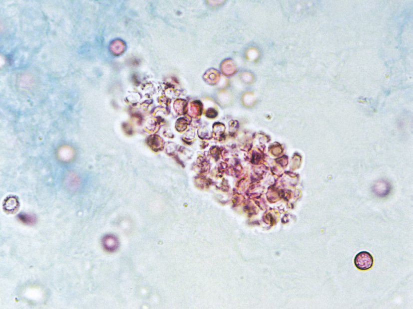
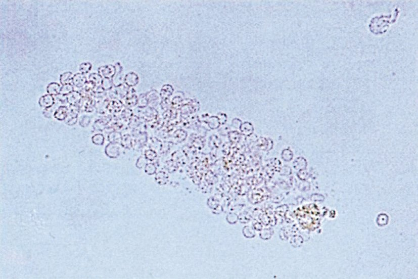
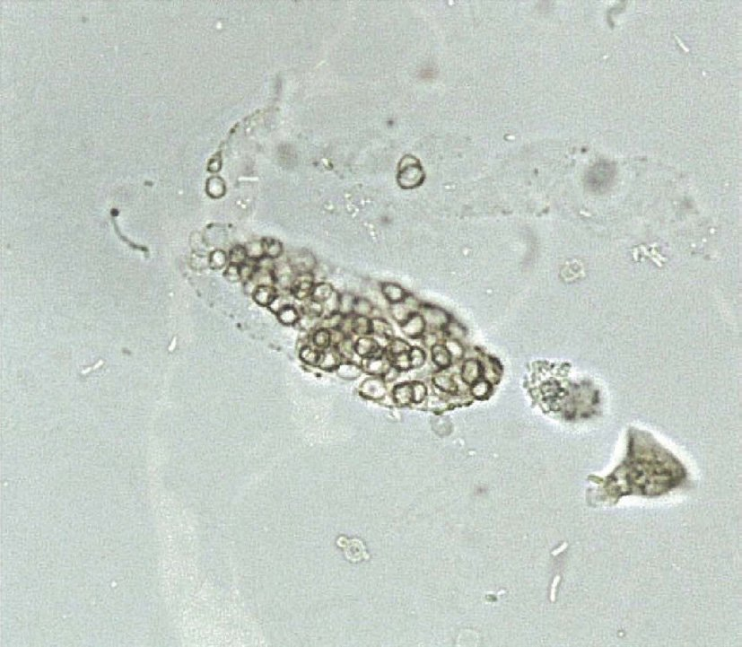

| 状況 | Cr-eGFR | CysC-eGFR | 解釈 |
| 筋肉量多い（ボディビルダー等） | 低値 | 正常 | 腎機能正常（Cr偽高値） |
| 筋肉量少ない（高齢・るい痩） | 正常に見える | 低値 | 腎機能低下（Cr偽低値） |
| 両方低下 | 低値 | 低値 | 真のCKD |
| 項目 | 変化 | ポイント |
| GFR（糸球体濾過量） | 低下 | 40歳以降、年1mL/分/1.73m²低下 |
| 腎血漿流量 | 低下 | |
| 尿濃縮力 | 低下 | ADH反応性低下 |
| 腎容積 | 低下 | 80歳で20〜30%縮小 |
| 硬化糸球体数 | 増加 | 加齢性変化の本体 |
| 機能ネフロン数 | 低下 |
| 薬剤 | 浮腫の原因？ | 理由 |
| ①PPI（プロトンポンプ阻害薬） | × | 浮腫の直接原因にならない |
| ②α遮断薬 | △ | 血管拡張作用で軽度浮腫の可能性あり |
| ③オレキシン受容体拮抗薬 | × | 浮腫の原因にならない |
| ④スタチン | × | 浮腫の原因にならない（筋肉痛は副作用） |
| ⑤NSAID | ◎ | プロスタグランジン阻害→腎血流↓→Na貯留 |
| 潜血（試験紙） | 尿沈渣 赤血球 | 原因 | |
| ヘモグロビン尿 | 陽性 | 少ない（<5/HPF） | 血管内溶血（遊離Hbが尿中へ） |
| ミオグロビン尿 | 陽性 | 少ない | 横紋筋融解症 |
| 血尿（糸球体性） | 陽性 | 多い＋変形RBC・RBC円柱 | 糸球体腎炎等 |
| 血尿（非糸球体性） | 陽性 | 多い＋均一RBC | 結石・腫瘍・感染 |
| 薬剤 | 障害部位 | 主な機序 |
| 炭酸リチウム | 尿細管・間質 | 腎性尿崩症・慢性間質性腎炎 |
| NSAID | 糸球体（血行動態性） | PG阻害→GFR低下 |
| アミノグリコシド | 近位尿細管 | 直接毒性 |
| シスプラチン | 近位尿細管 | 直接毒性 |
| 造影剤 | 尿細管 | 直接毒性＋血管収縮 |
| シクロスポリン | 輸入細動脈 | 血管収縮 |
| ガドリニウム（透析患者） | 皮膚・内臓 | NSF（腎性全身性線維症） |
| 薬剤 | K変動 | 機序 |
| スルホニル尿素薬 | K低下傾向 | インスリン分泌↑→K細胞内移行 |
| DPP-4阻害薬 | 中性 | K値に直接影響なし |
| SGLT2阻害薬 | K低下傾向 | 浸透圧利尿・尿K排泄↑ |
| Ca拮抗薬 | 中性 | K値に影響なし |
| 抗アルドステロン薬 | K上昇 | アルドステロン拮抗→集合管K排泄↓ |
| 薬剤 | 継続 | 理由 |
| NSAID | 中止 | PG阻害→腎血流低下→AKI悪化 |
| Ca拮抗薬 | 継続可 | 腎・電解質に直接影響なし |
| ビスホスホネート | 中止 | eGFR<35で禁忌（腎機能低下で蓄積） |
| BZD睡眠薬 | 中止 | 意識障害の可能性、高齢者で蓄積 |
| ACE阻害薬 | 中止/慎重 | 腎機能低下・高K血症（K 6.0）増悪リスク |
| 検査 | 透析患者 | 注意点 |
| 単純MRA（非造影） | ○ | 腎機能に無関係→第一選択 |
| ガドリニウム造影MRI | 原則禁忌 | NSF（腎性全身性線維症）リスク |
| 造影CT | 慎重 | 残存腎機能喪失リスク（透析患者でも尿量残存あれば注意） |
| 血管超音波 | ○ | 非侵襲的 |
| ABI（足関節上腕血圧比） | ○ | <0.9でPAD |
| 薬剤 | 中止 | 理由 |
| 利尿薬 | △慎重 | 脱水悪化のリスクあり |
| NSAID | 中止 | PG阻害→腎血流低下→造影剤腎症増悪 |
| 尿酸合成阻害薬 | ×不要 | 腎機能への直接影響なし |
| αグルコシダーゼ阻害薬 | ×不要 | |
| ACE阻害薬 | △（急性期） | 造影直前の中止は議論あり |
| 薬剤 | 造影前中止？ | 理由 |
| ビグアナイド（メトホルミン） | 中止 | 乳酸アシドーシスリスク |
| DPP-4阻害薬 | 不要 | 腎排泄だが乳酸アシドーシスリスクなし |
| SGLT2阻害薬 | △ | ケトアシドーシスリスク（空腹時・脱水時） |
| SU薬 | 不要 | |
| αグルコシダーゼ阻害薬 | 不要 |

| 尿沈渣所見 | 障害部位 |
| 赤血球円柱 | 糸球体 |
| 白血球円柱 | 腎盂腎炎・間質性腎炎 |
| 顆粒円柱 | 糸球体・尿細管障害（非特異的） |
| 蝋様円柱 | 末期腎不全（慢性腎臓病） |
| 脂肪円柱 | ネフローゼ症候群 |
| 変形赤血球 | 糸球体性血尿 |
| 疾患 | 特徴的尿所見 | 正誤 |
| Alport症候群 | 血尿・蛋白尿 | 潜血陰性は×（Alportは血尿あり） |
| 微小変化群 | 蛋白尿のみ（選択的） | 潜血陽性は×（血尿なし） |
| 糖尿病腎症 | アルブミン尿（微量〜大量） | 肉眼的血尿は×（通常なし） |
| IgA腎症 | 変形赤血球・RBC円柱 | ◎ 糸球体性血尿の典型 |
| 膀胱炎 | 膿尿・細菌尿 | 赤血球円柱は×（円柱は腎由来） |
| 部位 | 再吸収される物質 | ポイント |
| 近位尿細管 | ブドウ糖（100%）・アミノ酸・Na・HCO₃⁻・水（60〜70%） | Fanconi症候群で障害 |
| Henleループ下行脚 | 水（受動的） | 尿を濃縮 |
| Henleループ上行脚 | Na・Cl（能動的）、水不透過 | 尿を薄める |
| 遠位尿細管 | Na（アルドステロン調節）、H⁺ | |
| 集合管 | 水（ADH調節） | ADH→AQP2→尿濃縮 |
| 刺激 | 方向 | メカニズム |
| 傍糸球体細胞への圧低下 | ↑促進 | 輸入細動脈壁圧低下→レニン分泌 |
| マクラデンサへの低Na/低Cl刺激 | ↑促進 | NaCl濃度低下をセンサーが感知 |
| 交感神経β₁刺激 | ↑促進 | β₁受容体→cAMP↑ |
| RAASの阻害 | ↑促進 | AngII低下→負のフィードバック消失 |
| コルチゾール増加 | →変化なし | レニン調節とは独立 |
| 輸入細動脈圧上昇 | ↓抑制 | 壁圧上昇→レニン抑制 |
| 交感神経β受容体遮断 | ↓抑制 | β₁遮断→cAMP低下→レニン↓ |
| マーカー | 正確性 | 特徴・注意点 |
| イヌリン | ◎ ゴールドスタンダード | 外来性物質→負担大・実用的でない |
| クレアチニン | △ | 筋肉量・食事・薬剤の影響あり |
| シスタチンC | ○ | 筋肉量の影響なし→高齢者・筋疾患で優れる |
| 尿素（BUN） | △ | 食事・異化亢進・肝機能の影響大 |
| 薬剤 | K変動 | 機序 |
| β₂刺激薬 | K低下 | K細胞内移行（Na/K-ATPase活性化） |
| インスリン | K低下 | K細胞内移行（Na/K-ATPase活性化） |
| ループ利尿薬 | K低下 | 尿中K排泄増加 |
| グリチルリチン | K低下 | ニセアルドステロン症 |
| RAAS抑制薬 | K上昇 | アルドステロン↓→K排泄低下 |
| 項目 | 変化 | 覚え方 |
| 腎血流量 | 低下 | 40歳以降年1%低下 |
| GFR | 低下 | 40歳以降年1mL/分低下 |
| 尿濃縮力 | 低下 | ADH反応性↓・髄質高張勾配↓ |
| 腎容積 | 低下 | 70歳代で約20〜30%縮小 |
| 硬化糸球体数 | 増加 | |
| 機能ネフロン数 | 低下 |
| 所見 | 正常範囲 | 1個で異常？ |
| 赤血球 | 2以下/HPF | × |
| 白血球 | 3以下/HPF（男性5以下/WF） | × |
| 顆粒円柱 | 0 | ◎ 1個でも異常 |
| 硝子円柱 | 1〜2/WF（発熱・脱水で増加） | ×（少数なら正常） |
| 扁平上皮細胞 | 汚染の可能性あり | ×（正常細胞） |
| 薬剤 | eGFR 28での対応 | 理由 |
| NSAID | 減量/中止 | PG阻害→腎血流低下 |
| スタチン | 通常用量可 | 肝代謝主体 |
| 抗血小板薬 | 通常用量可 | 腎排泄だが用量調整不要 |
| アシクロビル | 大幅減量 | 腎排泄・結晶性腎症リスク |
| Ca拮抗薬 | 通常用量可 | 腎機能への直接影響なし |
| 選択肢 | 正誤 | 根拠 |
| ａ 膿尿はない | × | WBC 5〜9/HPF → 膿尿あり |
| ｂ 血尿はない | ○ | RBC <1/HPF → 血尿なし（基準5/HPF以上） |
| ｃ 希釈尿 | × | 比重1.020 → 濃縮尿 |
| ｄ 酸性尿 | × | pH 8.0 → アルカリ尿 |
| ｅ 病的円柱がある | × | 硝子円柱は非病的（発熱・運動・脱水で出現） |
| 選択肢 | 正誤 | 根拠 |
| ａ 死亡例は報告されていない | × | アナフィラキシーで死亡例あり |
| ｂ 予防に飲水制限が必須 | × | 補液（飲水）が予防→飲水制限は逆 |
| ｃ アナフィラキシーは直後には起きない | × | 投与直後〜数分で起こりうる |
| ｄ 腎機能低下はリスクでない | × | 腎機能低下は最重要リスク因子 |
| ｅ 気管支喘息はアレルギーのリスク | ○ | アナフィラキシー様反応リスク上昇 |

| 疾患 | 肉眼的血尿 | ポイント |
| 腎梗塞 | ○ | 急性の側腹部痛＋血尿 |
| 多発性囊胞腎 | ○ | 囊胞出血→血尿 |
| 紫斑病性腎炎（IgA血管炎） | ○ | 糸球体性血尿 |
| 慢性間質性腎炎 | × | 尿細管間質障害→血尿なし・蛋白尿（管状蛋白）が主 |
| ANCA関連腎炎 | ○ | 糸球体毛細血管の壊死→血尿 |

| 疾患 | 尿所見 | |
| IgA腎症 | 血尿＋蛋白尿＋変形RBC・RBC円柱 | 最多の一次性糸球体疾患 |
| 腎硬化症 | 蛋白尿が主（血尿少ない） | 高血圧性腎障害 |
| 腎盂腎炎 | 膿尿・細菌尿 | 変形RBCなし |
| 間質性腎炎 | 蛋白尿・管状蛋白 | 血尿は少ない |
| 尿酸腎症 | Cr上昇・UA高値 | 変形RBCなし |
| 物質 | 産生部位 | 機能 |
| レニン | 腎傍糸球体細胞 | AngI産生→RAASの起点 |
| エリスロポエチン（EPO） | 腎間質細胞（線維芽細胞様） | 赤血球産生促進 |
| 活性型ビタミンD₃（カルシトリオール） | 腎近位尿細管（1α水酸化酵素） | Ca吸収促進 |
| プロスタグランジン | 腎（腎髄質間質細胞） | 腎血流・Naバランス |
| 物質 | 主な産生臓器 | 腎産生？ |
| レニン | 腎傍糸球体細胞 | ◎ |
| カルシトニン | 甲状腺C細胞 | × |
| アルドステロン | 副腎皮質球状帯 | × |
| エリスロポエチン | 腎間質細胞 | ◎ |
| アンジオテンシノゲン | 肝臓（主） | ×（腎ではAngIを産生しない） |
| 薬剤 | K変動 | 機序 |
| β遮断薬 | K上昇傾向 | β₂遮断→K細胞外移行（β₁が主標的、副作用） |
| Ca拮抗薬 | 変化なし | K値に影響しない |
| サイアザイド系利尿薬 | K低下 | 遠位尿細管→尿中K排泄増加 |
| ARB（AngII受容体拮抗薬） | K上昇 | アルドステロン↓→K排泄低下 |
| ACE阻害薬 | K上昇 | アルドステロン↓→K排泄低下 |
| 物質 | 腎での産生 | 備考 |
| カテコラミン | × | 副腎髄質 |
| コルチゾール | × | 副腎皮質束状帯 |
| アルドステロン | × | 副腎皮質球状帯 |
| エリスロポエチン | ◎ | 腎間質細胞（低酸素で産生↑） |
| 活性型ビタミンD₃（1,25-(OH)₂D₃） | ◎ | 腎近位尿細管の1α水酸化酵素 |
| 構造 | 機能 |
| 糸球体 | 濾過（原尿産生） |
| 近位尿細管 | 再吸収（Na・水・アミノ酸・糖の60〜70%） |
| 傍糸球体装置 | レニン産生・TGFフィードバック |
| Henleのループ | 対向流増幅→髄質高張勾配の形成→尿濃縮の前提 |
| 集合管 | ADH依存性の水再吸収→尿の最終濃縮 |
| メサンギウム細胞 | 糸球体の支持・収縮・貪食 |
| 選択肢 | 正誤 | 根拠 |
| ａ 糸球体は皮質と髄質に分布 | × | 糸球体は皮質のみ（髄質には存在しない） |
| ｂ ADHで尿は濃縮される | ○ | 集合管のAQP2↑→水再吸収→尿濃縮 |
| ｃ EPOは腎臓から分泌 | ○ | 腎間質細胞（低酸素応答） |
| ｄ アルドステロンはK再吸収増加 | × | アルドステロン→K排泄増加（Na再吸収↑） |
| ｅ 濾過Naの約10%が再吸収 | × | 濾過Naの約99%が再吸収される |
| ホルモン | 高血圧？ | 機序 |
| レニン | ◎ | AngII↑→血管収縮・アルドステロン↑→Na貯留 |
| プロラクチン | × | 乳汁産生ホルモン、血圧に直接影響なし |
| カルシトニン | × | Ca低下→骨形成促進、血圧には無関係 |
| コルチゾール | ◎ | ミネラルコルチコイド様作用（Na貯留・K排泄）→高血圧 |
| バソプレシン（ADH） | △ | 高用量でV1受容体→血管収縮（通常量は水調節が主） |